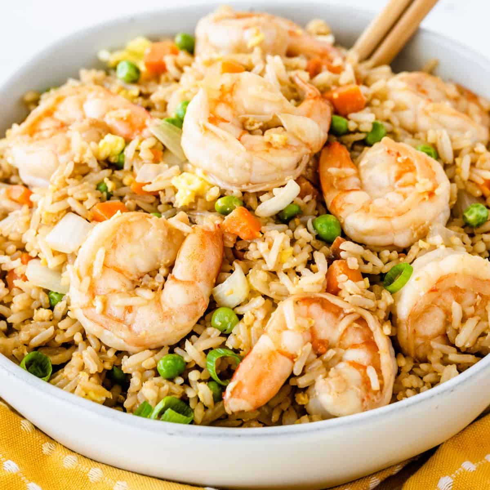

Shrimp Fried Rice
Cook Time: 15min
Prep Time: 10min
Reviews: 4.9 Stars
Serving: 4 servings

Ingredients
- 2 tablespoons sesame oil
- 2 tablespoons olive oil
- 1 pound uncooked medium shrimp, peeled and deveined
- 1 cup frozen peas and carrots
- ½ cup frozen corn
- 2 cloves garlic, finely minced, or more to taste
- 3 large eggs, lightly beaten
- 4 cups cooked rice
- 3 tablespoons thinly sliced green onions
- 3 tablespoons low-sodium soy sauce, or more to taste
- ½ teaspoon salt, or to taste
- ½ teaspoon freshly ground black pepper, or to taste
Directions
- Heat sesame oil and olive oil in a large nonstick skillet or wok over medium-high heat. Add shrimp; cook until bright pink outside and meat is opaque, about 3 minutes, flipping halfway through.
- Transfer shrimp to a plate using a slotted spoon, allowing oils and cooking juices to remain in the skillet. Set aside.
- Add peas and carrots and corn to the skillet; cook, stirring intermittently, until vegetables begin to soften, about 2 minutes. Add garlic; cook and stir for 1 minute. Push vegetables to the side of the skillet, add eggs to the other side; cook to scramble, stirring as necessary, 3 to 4 minutes.
- Add shrimp, rice, and green onions to the skillet; stir. Drizzle with soy sauce; season with salt and pepper. Stir to combine. Cook until shrimp is reheated, about 2 minutes.